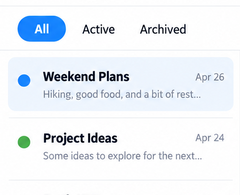
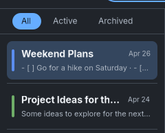

Latest consistency and canvas-pattern review. This page preserves the preceding filter-spacing correction.
Latest requested correction: one animated Appearance panel, removed back arrow and dimmed filters. Earlier captures remain below.
Filter band and first-note spacing
Requested spacing correction, verified in Minimal Dark first and then copied to Paper, Playful and Minimal Light. Dark and this correction remain under visual review. No commit or push.
Only filter-band padding and list top padding changed. Actual GTK captures use disposable notes. Click images for original pixels.
| Measurement | Before | After |
|---|
| Filter band | 36px | 44px |
| Pill height | 24px | 24px |
| Above / below pill | 6px / 6px | 10px / 10px |
| Divider to first row | 10px | 8px |
Reference spacing

Original Light reference detail, scaled to the current 240px sidebar widthFresh Dark GTK detail, same spacing now applies to all themesOriginal Minimal reference · Original Playful reference · Original Paper reference. The reference has a taller band around the flat pill and a smaller first-row gap.
Minimal Dark

Before filter/list spacingAfter filter/list spacingMinimal Dark: full GTK captures, minimum sizes, hover, long titles and tools
Paper
 Before filter/list spacing
Before filter/list spacing After filter/list spacing
After filter/list spacingPaper: full GTK captures, minimum sizes, hover, long titles and tools
Playful
Playful: full GTK captures, minimum sizes, hover, long titles and tools
Minimal Light
Minimal Light: full GTK captures, minimum sizes, hover, long titles and tools
Verification
Every theme measured 44px band, 24px pill, 10px top/bottom padding, 8px first-row gap and 240px sidebar. Exact default/minimum sizes and tools preserving note dimensions passed. Formatting, 22 tests, strict Clippy, release build, diff checks and the existing GTK shared-editor regression passed. No GTK warnings/errors occurred in the completed preview runs.
All default individual notes and tool panels are pixel-identical before/after. Minimum note differences are confined to caret/scrollbar frames. Native pointer/Escape/timer checks were not repeated. Only eight theme-scoped CSS spacing declarations changed. No shared design-system refactor. Nothing committed or pushed. Stop for visual review.